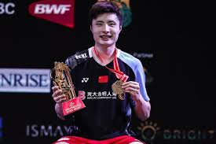

Le badminton est un sport de raquette captivant qui peut être pratiqué seul ou en équipe. Il se joue avec un volant, un objet léger composé généralement de plumes ou de plastique, que les joueurs s'efforcent de faire passer au-dessus d'un filet placé au centre du terrain. Contrairement à d’autres sports de raquette comme le tennis, le badminton nécessite une grande rapidité, de l’agilité, et une capacité à réagir instantanément aux mouvements du volant, ce qui le rend extrêmement dynamique.
Les règles sont relativement simples, mais le jeu demande une bonne maîtrise des techniques de frappe, comme le service, le smash, et le dégagement. Ce sport est très populaire dans les pays asiatiques tels que la Chine, l'Indonésie, et la Corée du Sud, mais il est également pratiqué en Europe, où il est reconnu comme un sport olympique depuis 1992.
Le badminton a des racines anciennes, remontant à des jeux pratiqués en Inde au 19e siècle, connus sous le nom de "Poona". Les officiers britanniques stationnés en Inde ont découvert ce jeu et l’ont ramené en Angleterre au début du 20e siècle, où il a été rapidement popularisé. Il a été joué à l'origine dans les salons et les jardins, mais au fur et à mesure de son développement, des règles standardisées ont été établies, et des compétitions ont commencé à se tenir.
En 1873, le jeu a été renommé "badminton" en référence au domaine de Badminton, situé dans le Gloucestershire, où des parties de badminton étaient jouées par l'aristocratie britannique. Le sport a connu une expansion rapide en Europe et en Amérique du Nord, et il est devenu un sport olympique lors des Jeux de Barcelone en 1992. Depuis lors, le badminton est devenu l’un des sports les plus populaires et les plus compétitifs à l’échelle mondiale.
Le badminton est un sport de raquette joué soit en simple (un contre un), soit en double (deux contre deux). Le jeu commence par un service, où le serveur doit frapper le volant depuis sa zone de service, dans la diagonale du terrain adverse. Les points sont marqués lorsqu’un joueur ou une équipe parvient à faire tomber le volant dans le terrain de l'adversaire. Le match se joue généralement en trois sets, et chaque set est remporté par le premier joueur ou équipe à atteindre 21 points, avec une différence d’au moins deux points.
| Règle | Description |
|---|---|
| Le Volant : | Le volant est l’élément central du jeu. Il est conçu pour être léger, mais il peut être très difficile à contrôler en raison de sa forme et de son vol particulier. Un volant peut être fabriqué en plumes naturelles ou en plastique, chaque matériau ayant ses propres caractéristiques de vol. |
| Le Filet : | Le filet du badminton est suspendu à une hauteur de 1,55 mètre au centre du terrain, avec une légère variation en fonction du type de compétition. Le filet sépare le terrain des deux joueurs ou équipes. Un volant qui touche le filet mais passe dans la zone de l’adversaire est considéré comme un point pour l’adversaire. |
| Le Service : | Le service doit être effectué en diagonale. Le serveur doit frapper le volant sous la taille et dans la zone de service de l’adversaire. Le service est crucial car il donne souvent le ton du jeu. Un service mal effectué ou hors des limites donne un point à l’adversaire. |
En plus de ces règles de base, il existe de nombreuses autres subtilités dans la façon de jouer le badminton, telles que les techniques de frappe (smash, dégagement, etc.), la gestion de la position sur le terrain et la stratégie de jeu en fonction de l’adversaire.
En conclusion, le badminton est un sport à la fois accessible et exigeant. Il permet de développer des qualités physiques comme l'agilité, la rapidité, et la coordination, tout en offrant un plaisir de jeu incomparable. Que ce soit pour un moment de détente entre amis ou pour des compétitions de haut niveau, il existe de nombreuses façons de profiter de ce sport. En plus de son aspect physique, le badminton est également un excellent moyen de renforcer la concentration et la stratégie.
Ce sport est idéal pour ceux qui recherchent une activité à la fois ludique et bénéfique pour leur santé. En pratiquant régulièrement, on peut améliorer son endurance, sa souplesse et sa réactivité. Le badminton, grâce à sa simplicité d'accès et son côté dynamique, est donc un choix parfait pour ceux qui veulent s'amuser tout en restant en forme.